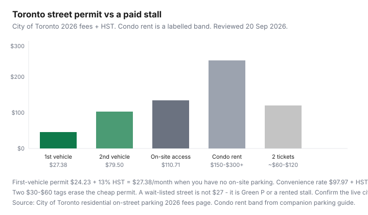

Transportation · Toronto
How Toronto residential parking permits work — and when they beat paying for a spot
Drivers rent a $250 condo stall — or collect overnight tags — without checking whether their street is even in the permit program. The City of Toronto’s 2026 residential on-street table is not mysterious: $24.23 + HST a month for a first vehicle with no on-site parking, more for a second car, and a convenience rate if a driveway or stall already exists. A permit is a licence to hunt a legal curb, not a deeded space. This is how the program works, and when a stall or no car at all is still cheaper.
Put the number on the dashboard in car TCO. Stall math: condo parking vs car-share. If the permit is what keeps a second car alive, read car-lite city numbers.
Key takeaways
- 2026 City of Toronto monthly fees: $24.23 + HST first vehicle with no on-site parking ($27.38); $70.35 + HST second and subsequent; $97.97 + HST if you have on-site parking and want the curb anyway. Reissue $10.40 + HST.
- Terms run 1 Dec–31 May and 1 Jun–30 Nov. Mid-term purchases are charged from the month you buy — no future-dated start.
- On-site parking (driveway, garage, stall) blocks the cheap rate unless you prove you cannot use it. A property-manager letter on letterhead is the usual document.
- Temporary / visitor: $20.74 / $29.97 / $44.94 + HST for 24 hours, 48 hours, or 7 days. That is cheaper than a weekend Green P habit if space exists.
- A permit is not a guaranteed space. Wait-lists, snow routes, seven-day same-spot rules, and two tickets a month can beat any “cheap curb” story.
Permit types and rough monthly costs
Residential on-street permits are for residents on designated streets or permit areas. You park during the hours on the signs. You are generally exempt from 1-, 2-, and 3-hour rules. You are not exempt from fire hydrants, rush-hour no-stopping, or a major snow-storm condition on a snow route.
| Product | Fee (ex-HST) | With 13% HST |
|---|---|---|
| 1st vehicle, no on-site parking | $24.23 / month | $27.38 |
| 2nd + vehicles, no on-site | $70.35 / month | $79.50 |
| Has on-site parking (convenience) | $97.97 / month | $110.71 |
| Reissue | $10.40 | $11.75 |
| Temporary 24 h / 48 h / 7 days | $20.74 / $29.97 / $44.94 | $23.44 / $33.87 / $50.78 |
Older market write-ups still quote wide “area” bands. Use the city’s 2026 table as the primary number, then confirm your street is designated and has a space. Area-based permits let you park on other licensed streets in the area — they do not guarantee your front door.

Eligibility: on-site parking rules that block you
The program “generally services those residential areas where driveways and/or garages are not common.” If parking exists on the property, you pay the convenience rate — or you prove you cannot use that parking:
- Tenants: recently dated, signed letter from the owner that on-property parking is not available.
- Apartments, condos, townhouses: the same idea on property-management letterhead.
- Owners: ownership documents for vehicles that already occupy the on-site spots.
Moving into a house: the city asks for a recently dated owner letter that on-site parking is not available. Company-registered vehicles and commercial plates have extra rules (personal-use-only, length and weight caps). Second cars at the same address pay the second-vehicle rate even if insurance lists you as an occasional driver.
How to apply and renew without gaps
- Confirm the street or area is designated and that a space exists. If not, ask about the wait-list — a wait-list is not a permit.
- Collect a valid vehicle registration and a driver’s licence that match the permit address (or an accepted proof-of-address document).
- Apply by mail (photocopies + cheque to Treasurer, City of Toronto) or in person. Online renewal exists for current holders in the renewal window.
- Affix the permit on the lower windshield, driver’s side. A permit on a trailer or bin is invalid.
- Renew before 1 Jun and 1 Dec. The city notes the spring 2026 renewal window closed — do not assume a grace month.
Plate changes, address changes, and lost permits are reissues ($10.40 + HST). Replacement vehicles while yours is in the shop can get a short no-charge temporary. Mid-month purchase still bills that month.
Visitor and temporary permits
Temporary resident or visitor permits cover 24 hours, 48 hours, or 7 days on a permit street or area if space is available. That is the product for in-laws, not “they will risk it.” A week of visitor permits (~$51 with HST) is still cheaper than a downtown garage weekend if the curb is real. It is not a second residential permit. Alternate-side changeover mornings have a limited ticket-review path if you move the car — read the city page before you argue with a tag.
Compare to rented garage and condo spots
A first-vehicle permit at $27.38/month beats almost any titled stall. That is the point of the program. Compare honestly:
- Condo rent $150–$300+/month in the core (companion stall guide) — guaranteed, dry, and not a snow-route problem.
- Green P or private monthly lots — often the wait-list substitute, not a bargain.
- Ratehub’s $200/month parking placeholder (29 Apr 2026) is a national average, not your curb.
If you already pay for a stall and still want the street, you are in the $110.71 convenience band — price that against just using the stall.
Enforcement realities and ticket math
Toronto Police Parking Enforcement tags vehicles without permits in permit spaces. A vehicle that sits more than seven consecutive days in the same spot can be tagged and towed. Snow routes during a Major Snow Storm Condition are not “my permit said overnight.” Two $30–$60 tags a month ($60–$120) can exceed the first-vehicle permit. One tow is a stall you do not control. Log two months of actual tickets before you call the curb free.
When giving up the car beats any permit
If you are on a multi-year wait-list, paying convenience rates on a second vehicle, and still buying Green P for work, the permit is not the strategy — the car is the strategy. A TTC Adult 12-Month at $143 plus a few car-share days is the comparison, not $27 versus $250. Households that keep a car for weekend cottages should still put every tag, every visitor week, and the stall on the dashboard. The permit is a cheap legal curb. It is not a reason to own a VIN.
Office note, 20 Sep 2026: Permit Parking — 416-392-7873, permit.parking@toronto.ca. Fees inflate under the city’s user-fee policy. This page is not a substitute for the live toronto.ca fee tab or a parking ticket review.
Sources & date stamps
- City of Toronto, Residential on-street parking — 2026 fees tab; six-month terms; on-site parking evidence; wait-list; seven-day rule. Reviewed 20 Sep 2026.
- City of Toronto, Temporary on-street parking — 24 / 48 / 7-day fees. Reviewed 20 Sep 2026.
- Ratehub 2026 TCO parking placeholder $200 (29 Apr 2026); companion condo-parking rent bands.
- TTC Adult 12-Month $143 — companion fare guide.
Frequently asked questions
How much is a Toronto residential parking permit in 2026?
First vehicle with no on-site parking: $24.23 plus HST per month ($27.38). Second vehicle: $70.35 plus HST. If you have on-site parking: $97.97 plus HST. Confirm the live city table.
Can I get a cheap permit if my building has a garage?
Usually no — you need evidence you cannot use on-site parking, or you pay the convenience rate. Condos and rentals typically need a property-manager letter on letterhead.
How long does a permit last?
Six-month terms: 1 December–31 May and 1 June–30 November. You can buy two consecutive terms. Mid-term purchases are charged from the month you apply.
What if my street is wait-listed?
File a wait-list application. Until a space exists you do not have a $27 solution — you have Green P, a rented stall, or fewer cars.
Do visitor permits exist?
Yes. Temporary 24-hour, 48-hour, and 7-day permits ($20.74 / $29.97 / $44.94 plus HST) if space is available. Do not send guests out to “risk it.”